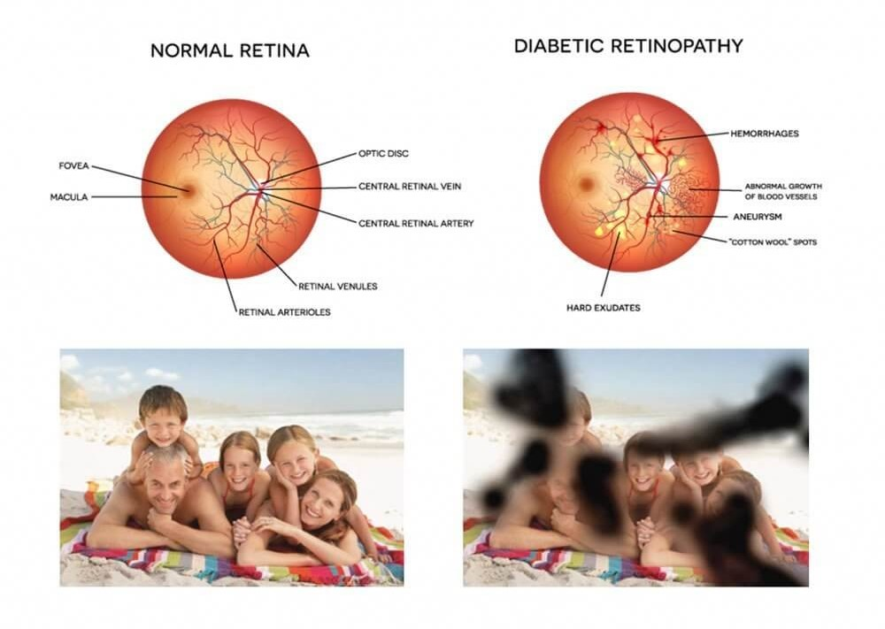

An AI-powered system to detect and classify Diabetic Retinopathy levels with precision and reliability.
"Your Eyes Deserve a Clear Tomorrow.
Early Detection, Brighter Protection."
Diabetic Retinopathy is a serious eye condition caused by prolonged high blood sugar levels, leading to damage to the retina's blood vessels. It is one of the leading causes of blindness worldwide, especially among diabetic patients.
Early stages may not show noticeable symptoms, but as the condition progresses, it can lead to blurred vision, dark spots, and vision loss. This makes early detection and intervention critical.
Our AI-powered system leverages cutting-edge deep learning and machine learning techniques to analyze retina images, classify the severity of Diabetic Retinopathy, and assist healthcare providers in making informed decisions. It is capable of both binary (presence/absence) and multiclass (severity levels) classifications.